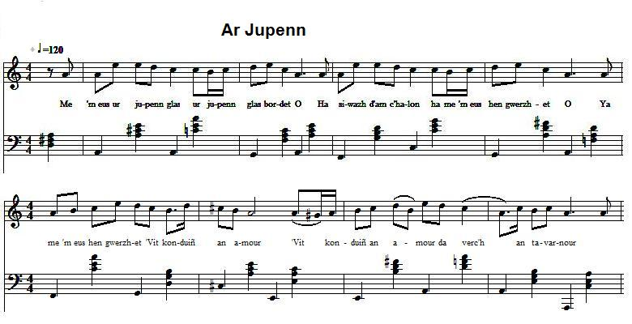

Chupenn glas
Veste bleue
Blue Jacket
Chant collecté par Théodore Hersart de La Villemarqué
dans le 1er Carnet de Keransquer (pp. 213-214).

Mélodie
Arrangt Christian Souchon (c) 2015
|
A propos de la mélodie Inconnue. Celle proposée s'inspire de "M'em-es choejet ur servijer" (source: le site de M. Pierre Quentel qui donne comme source première le recueil "Yaouankiz a gan", 15 chansons bretonnes harmonisées, par Polig Monjarret, publié dans les années 30). Du fait de la parenté de la présente pièce avec le chant de "La poule blanche" (ar yarik wenn) auquel La Villemarqué qui l'a noté le premier, page 286 du carnet, a donné le titre de "ar Guiskement", "Le vêtement", on pourrait penser que tous deux partagent la même mélodie. L'examen de la métrique et de la prosodie des deux textes montre que ce ne peut être le cas. (La mélodie de "La poule blanche" est connue par le chant pour enfants qu'en a fait l'Abbé Augustin Conq (1874 -1952) également connu sous le pseudonyme de "Paotr Treoure", le gars de Tréouré). A propos du texte M. Donatien Laurent ne rattache ni "Chupenn glas" ni "Yarik wenn" à aucun chant déjà recueilli, ce qui en fait de La Villemarqué le premier collecteur. Tous deux énumèrent les sacrifices consentis par un amoureux (une amoureuse) pour faire la cour à l'élu(e) de son coeur: pièces de vêtement dans le premier chant, des animaux de ferme dans le second. Le présent chant, avec ses deux parties et ses variantes constitue un petit lexique du costume traditionnel breton. On peut le compléter par les chants suivants: |
About the tune Unknown. The present melody is a variation to "M'em-es choejet ur servijer" (from the site maintained by Pierre Quentel; source: "Yaouankiz a gan", 15 Breton songs arranged by Polig Monjarret, published in the 1930ies). Due to the similarity of the present text with the song "The white hen" (ar yarik wenn) which La Villemarqué, as its first collector, recorded on page 286 of his copybook under the title "ar Guiskement", "The Garment", it could be inferred that both songs were sung to the same tune. But looking closely at the metrics and prosody of both texts demonstrates the contrary. (The tune sung to "The white hen" is well known as the vehicle for the homonymous children's song composed by the Rev. Augustin Conq (1874 -1952), also known as "Paotr Treoure", the Boy from Tréouré). About the lyrics M. Donatien Laurent parallels neither "Chupenn glas" nor "Yarik wenn" with any other already gathered song, which makes of La Villemarqué their first inventor. Both songs list the items offered as a sacrifice made by a suitor (male or female) to please his (her) sweatheart: garments in the first song, farm animals in the second. The song at hand with its two parts and its variant composes a little glossary of traditional costumes of Brittany. To complete it, see the following songs: |
|
BREZHONEK p. 213 I Ar paotr 1. Me 'm-eus ur jupenn glas, Ur jupenn glas bordet O (div wech) DISKAN Ha siwazh d'am c'halon ha me 'm-eus hen gwerzhet O 'Vit konduiñ an amour Da verc'h an tavarnour! 2. Me 'm-eus ur jupenn wenn, Ur jupenn wenn bordet O 3. Me 'm-eus ur bordet glas, Ur bordet seizennet O 4. Me'm-eus jiletenn wenn Ur jiletenn bordet 5. Me'm-eus ur roched lien Ya ur roched lien froñset, O 6. Me am-eus bragoù gloan Me 'm-eus bragoù gloan bordet, O 7. Me' m-eus loeroù berr Ya, loeroù berr bordet O 8. Me 'm-eus loeroù glas Loeroù flour ha net. 9. Me am-eus boutoù ler Ya boutoù ler gwalennet 10. Me'm-eus un tokik du Un tokik du bleuniet O 11. Me'm-eus ur mouchouer ruz Ur mouchouer ruz bordet, O p. 214 II Ar plac'h 12. Me'm-eus 'r jiletenn wenn Jiletenn wenn bordet O (div wech) DISKAN Ha siwazh d'am c'halon ha me 'm-eus hen gwerzhet O 'Vit konduiñ an amour Da baotr an tavarnour! 13. Me 'm-eus ur c'horken du Ur c'horken du bordet O 14. Me 'm-eus un hiviz gwenn Un hiviz dantelet O 15. Me 'm-eus ur manchoù glas Manchoù glas nevez-prenet. 16. 'M-eus ur gotilhon glas 'R gotilhon glas bordet O 17. 'm-eus un tavañcher briz 'n tavañcher briz bordet O 18. Me 'm-eus ur c'hoefik sklaer Ue c'hoefik sklaer bordet O 19. Me'm eus ur seizenn ruz Ur seizenn ruz... O 20. Me 'm-eus ur c'hoefik bihan A zo dantelezet O 21. Me 'm-eus loeroù wenn Loeroù wenn ... O 22. Me am-eus boutoù ler Gant ... gwalennet. 23. Me'm-eus ur mouchouer ruz Ur mouchouer ruz bordet, O III STUMM ALL 1 bis. N'em-boa 'med ur jupenn Ur jupenn glas bordet O (div wech) DISKAN Ha me'm-eus hen gwerzhet 'Balamour d'am mestrez O Evit ober al lez Da verc'h ar verourez. 2 bis. Me 'm-eus ue jakenn glas Ur jakenn glas se(ize)nnet O. 3 bis. Me 'm-eus bragoù gloan ne(v)ez Bragoù gloan nevez graet O. 4 bis. Me 'm-eus [un tok nevez] Gant ur boukl arc'hantet O 5. bis. M'em-boa blev melen Blev melen ha frizet O DISKAN Ha me 'm-eus e troc'het Ha me 'm-eus e troc'het O Evit ober al lez Da baotr an intañvez 6 bis. Me m'eus ur voulouz du Gant ur c'hroaz alaouret O 7 bis. Me am-euz ur c'hoefik Ur c'hoefik ampezet O 8 bis. Me am-eus ur seizen Ur seizen arc'hantet O 9 bis. Me am-eus ur grib wenn Ur grib korn boukedet O 10 bis. Liboudenn da bemde Bemde, seizenn da zul O KLT gant Christian Souchon. |
TRADUCTION FRANCAISE p. 213 I Le garçon 1. J'ai une veste bleue Une veste bleue galonnée O (bis) REFRAIN Et, pauvre de moi, Je l'ai vendue O Pour "courtiser d'amour" La fille de l'aubergiste! 2. J'ai une veste blanche, Une veste blanche galonnée O 3. J'ai un paletot bleu, Un paletot enrubanné O 4. J'ai un gilet blanc Un gilet galonné O 5. J'ai une chemise de toile De toile froncée, O 6. J'ai des braies de laine ...galonnées, O 7. J'ai des bas courts Des bas courts galonnés O 8. J'ai des bas bleus Des bas doux et nets O. 9. J'ai des souliers de cuir Des souliers à boucle O 10. J'ai un chapeau noir Un chapeau noir à fleurs O 11. J'ai un mouchoir rouge ...galonné O p. 214 II La fille 12. J'ai un gilet blanc Un gilet blanc galonné O (bis) REFRAIN Et, pauvre de moi, Je l'ai vendu O Pour courtiser d'amour Le fils de l'aubergiste! 13. J'ai un corsage noir ... galonné O 14. J'ai une chemise blanche Ornée de dentelles O 15. J'ai un "gilet à manches" bleu Nouvellement acheté O. 16. J'ai un cotillon bleu ... galonné O 17. J'ai un tablier bigarré ...galonné O 18. J'ai une coiffe claire ... galonnée O 19. J'ai un ruban rouge ... O 20. J'ai une petite coiffe ... en dentelles O 21. J'ai des bas blancs Des bas blancs ... O 22. J'ai des souliers de cuir ... a boucle. 23. J'ai un mouchoir rouge ... galonné, O III VARIANTE 1 bis. Je n'avais qu'une vest Une veste galonnée O (bis) REFRAIN Je l'ai vendue A cause de ma maîtresse O Pour faire la cour A la fille de la fermière. 2 bis. J'ai une jaquette bleue ...garnie de soie O. 3 bis. J'ai des braies de laine Faites de neuf O. 4 bis. J'ai un [chapeau neuf] Avec une boucle d'argent O 5. bis. J'avais des cheveux blonds Des cheveux blonds frisés O REFRAIN Et je les ai coupés Et je les ai coupés O Pour faire la cour Au fils de la veuve 6 bis. J'avais un velours noir Avec une croix dorée O 7 bis. J'ai une petite coiffe Une coiffe empesée O 8 bis. J'ai un ruban Un ruban argenté O 9 bis. J'ai un peigne blanc De corne fleuri O 10 bis. Du chiffon tous les jours, Des rubans, le dimanche O |
ENGLISH TRANSLATION p. 213 I The boy 1. I have a blue jacket Trimmed with braid O (bis) CHORUS But woe is me, I sold it off O To woo my love The landlord's daughter! 2. I have a white jacket, Trimmed with braid O 3. I have a blue cardigan, Adorned with ribbons O 4. I have a white waistcoat Trimmed with braid O 5. I have a linen shirt A gathered shirt, O 6. I have woolen breeches ... trimmed with braid, O 7. I have short stockings Trimmed with braid O 8. I have blue stockings Both soft and neat O. 9. I have leather shoes With buckles O 10. I have a black hat Adorned with flowers O 11. I have a handkerchief Red and trimmed with braid O p. 214 II The girl 12. I have a white vest Trimme with braid O (bis) CHORUS But, woe is me, I sold it off O To woe my love The landlord's son! 13. I have a black blouse ... trimmed with braid O 14. I have a white blouse adorned with lace O 15. I have a blue "vest with sleeves" Recently bought O. 16. I have a blue petticoat ... trimmed with braid O 17. I have a many-coloured apron ...trimmed with braid O 18. I have a clear headdress ... trimmed with braid O 19. I have a red ribbon ... O 20. I have a little lace ... headdress 21. I have white stockings White stockings ... O 22. I have leather shoes ... with buckles. 23. I have a red handkerchief ... trimmed with braid, O III VARIANT 1 bis. I had only one jacket Trimmed with braid O (bis) CHORUS But I sold it off To please my love O Since I am wooing The farmer's daughter. 2 bis. I had a blue morning coat ...adorned with silk O. 3 bis. I had woolen breeches Recently made O. 4 bis. I had a [new hat] With a silver buckle O 5. bis. I had a fair hair It was fair and curly O CHORUS And I had it cut And I had it cut O To please The widow's son 6 bis. I had a black velvet ribbon With a golden cross O 7 bis. I had a little Starched headdress O 8 bis. I had a ribbon A silver ribbon O 9 bis. I had a white comb A horn comb adorned with flowers O 10 bis. I wore rags every day, But ribbons on Sundays O |
Ar Gwiskamant
Gwiskamant a bep seurt